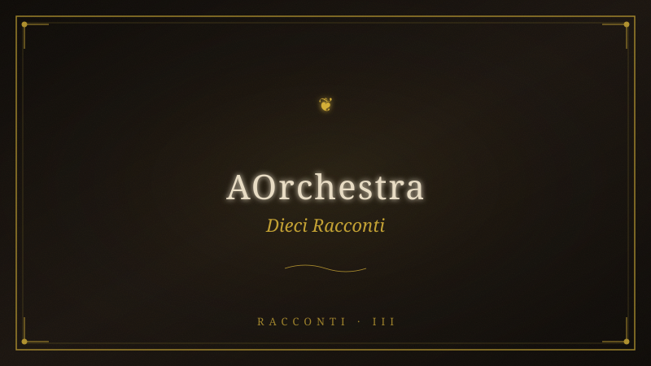

10 Racconti — AOrchestra#

Fonte: 10-racconti-aorchestra.pdf
AORCHESTRA — 10 Racconti dei Monti
Sabini
Produzione: PI (orchestratore) · Grammatica: Ayman
Stazioni: Pianura · Salita · Cresta · Pozze · Cascata · Discesa · Cerchio
Cerchio mesopotamico: serpente (T evere) → stagno (Gilgamesh) → ulivo (pianta
insegnata)
Φ1 — La Pianura non è una
*Sub-agente Φ = ⟨I: "Mostra la visione delle città sovrapposte come rivelazione
centrale",
C: {stazione: Cresta, contaminazione: gnosi dickiana + Impero materiali},
T: {scrittura visionaria}, M: {stesso modello}⟩*
L'Itinerrante è in piedi sulla cresta del Monte T ancia. Il vento lo attraversa e lui — per
la prima volta — non oppone resistenza.
Sotto di lui, la valle si dispiega come un ventaglio di tempo. E vede. Non con gli
occhi: con qualcosa che la Pianura gli ha atrofizzato e che qui, a questa quota,
ricomincia a funzionare come un muscolo dimenticato.
Vede la Pianura dall'alto. E vede che non è una.
Il tempo si sfoglia come un mazzo di carte in mano a un giocatore che conosce ogni
partita. Sotto la città di vetro — quella che conosce, quella in cui è nato, quella che
lo ha prodotto — affiorano le altre: la città di mattoni con le mura così alte che gli
dèi ci camminavano sopra; la città di marmo con le sue aquile; la città di pietra con
le sue torri; la città di fango con le sue divinità senz'occhi. E tutte hanno la stessa
pianta. La stessa griglia. Lo stesso foro centrale dove qualcuno parla e tutti
ascoltano.
L'Impero non è mai caduto. Ha soltanto cambiato materiali. I nomi degli dèi sulla
porta sono diventati nomi di algoritmi nella tasca. La divinità non è morta: si è fatta
infrastruttura. Non chiede più sacrifici: chiede attenzione. Che è la stessa cosa, con
meno sangue e più polvere.
E dentro ogni città — questa è la rivelazione che lo spezza in due — c'è lui. Lo scriba
col calamo, il funzionario col sigillo, il bancario col calcolatore, il consulente con le
slide. Sempre la stessa schiena china sullo stesso tavolo. Sempre certo che quella
fosse la prima e unica volta. Sempre pronto a difendere il tavolo come se fosse casa
sua.
Il tavolo ha bisogno che tu lo creda. Un giocatore che ricorda le partite precedenti
comincia a fare domande sul mazzo.
Ma lui, adesso, ricorda. Non sa come, non sa perché — ma ricorda.
E la Pianura, lassù in fondo, non lo sa ancora. Ma ha già perso un giocatore.
Il vento sulla cresta non smette di soffiare. Non lo farà mai. È l'unica cosa che non
ha mai smesso.
Φ2 — La Porta Murata
*Sub-agente Φ = ⟨I: "Racconta la salita come riapertura del corpo-porta",
C: {stazione: Salita, contaminazione: corpo murato + anamnesis dei piedi},
T: {scrittura fisica, sensoriale}, M: {stesso modello}⟩*
Il sentiero sale subito, senza preavviso. Carrareccia, pietra, verticale. L'Itinerrante
sente ogni fibra del suo corpo protestare — e in quella protesta riconosce una lingua
che aveva dimenticato.
Per tutta la vita della Pianura, il corpo è stato un oggetto. Un veicolo da ottimizzare.
Una vetrina da allestire. Un motore da carburare. Gli hanno venduto il conteggio dei
passi, la qualità del sonno, le calorie bruciate, tutto misurato, tutto tradotto in dati,
tutto restituito come grafico. Il corpo è stato trasformato in un curriculum — e lui ha
passato anni a migliorare il curriculum senza mai chiedersi chi fosse il firmatario.
Ma qui, su questa salita che non concede tregua, il corpo non è più un oggetto. È
una porta. L'unica. E l'hanno murata.
Ogni passo scrosta uno strato di quel muro. Il sudore scioglie il cemento. Il fiato
corto scardina le assi. I muscoli che tremano non sono debolezza: sono il rumore
della porta che si riapre dopo anni di chiusura forzata.
E in certi tornanti, quando il piede cerca l'appoggio sulla roccia, lo trova prima che
l'occhio lo veda. Come se la pianta del piede conoscesse questa pietra da un tempo
che nessuna biografia contiene. Un'antenna, non un arto. Un radar, non uno
strumento.
Il corpo non ha mai smesso di sapere. È la mente che si è fatta riempire.
La mente urla. Parla con la voce del buonsenso — che è la lingua che il potere usa
quando ha già vinto. Fermati, torna giù, non ce la fai, non sei tagliato, non sei
abbastanza forte. Ma la mente è l'ultimo altoparlante della Pianura, e qui, a questa
quota, il suo segnale si fa più debole.
L'Itinerrante continua a salire. Non perché sia coraggioso. Perché il corpo — quel
corpo tradito, silenziato, ottimizzato, venduto — ha ricominciato a parlare. E dice
soltanto: vai.
Φ3 — Il Nome nelle Acque
*Sub-agente Φ = ⟨I: "Racconta le Pozze come luogo dove il debito si rivela",
C: {stazione: Pozze, contaminazione: Amal + mantelli + Gilgamesh},
T: {scrittura visionaria, mitologica}, M: {stesso modello}⟩*
L'acqua delle Pozze del Diavolo è scura, verde, profonda come un occhio aperto che
non ha mai battuto ciglio.
L'Itinerrante si china. E dentro l'acqua non vede il suo riflesso: vede il nome.
Si chiamava Amal. Era entrata in un documento con quattro parole tra virgolette,
parole salite dal fondo di una terra in guerra, ed era stata tagliata una sera per
ragioni di spazio. Lui ricorda il numero della nota e non ricorda le parole della donna
— e capisce, chino sull'acqua nera, che questa è la diagnosi esatta della sua
malattia: ha imparato a contare tutto tranne ciò che conta.
Dietro il nome, nell'acqua più fonda, si muovono altre sagome. Le sente come si
sente una stanza piena di gente quando si è ancora nel corridoio: non le si vedono i
volti, ma si sa che ci sono. Volti mai incontrati che pure riconosce, come si riconosce
la propria calligrafia in una lettera che non si ricorda di aver scritto. Ogni volta che
ha obbedito, in ogni vita, in ogni città del mazzo. La catena non si spezza: si allunga.
E lui è stato uno degli anelli.
Poi l'acqua si fa antica — così antica che la parola «antica» perde senso — e mostra
la scena che lo aspetta da cinquemila anni. Un uomo in riva a uno stagno, sfinito. Ha
perduto l'unico essere che gli somigliava. Ha attraversato le acque della morte per
non perdere anche se stesso. Stringe una pianta strappata al fondo del mare. Si
addormenta. Un serpente esce dall'acqua, mangia la pianta, si lascia dietro la pelle
vecchia. L'uomo si sveglia con le mani vuote. Nel suo pianto, l'Itinerrante riconosce il
suono della propria anima prima che imparasse a mentire.
«La prima volta che sei morto, eri Gilgamesh», dice una voce alle sue spalle.
L'Itinerrante non si volta. Sa che è Silvano. Sa che è sempre stato Silvano. Sa che
Silvano non gli sta rivelando niente di nuovo: gli sta solo restituendo una memoria
che il corpo non ha mai perso.
«Ogni volta cercavi qualcosa senza sapere cosa. Ogni volta combattevi senza sapere
perché. Ogni volta morivi senza sapere per chi. Ma la ruota ha un punto in cui si
ferma. E non è la morte: la morte è soltanto il cambio del mantello. È quando non
hai più bisogno di tornare.»
L'Itinerrante guarda l'acqua. Il nome di Amal si allontana, la scena di Gilgamesh si
dissolve. Rimane solo lui, chino su una pozza che ha la pazienza delle cose che
sanno aspettare.
«Adesso, in questa vita», dice Silvano, «sei arrivato al punto in cui non guardi più il
disegno da fuori. Lo vedi da dentro.»
Φ4 — Il Dio che Uccide e Battezza
*Sub-agente Φ = ⟨I: "Racconta la cascata come incontro con il dio unico che uccide e
battezza",
C: {stazione: Cascata, contaminazione: stesso freddo/dio},
T: {scrittura iniziatica, corporea}, M: {stesso modello}⟩*
La cascata non ha intenzione. Non è arrabbiata. Non è generosa. È. Ed è la stessa
forza che d'inverno, qui, uccide. Lo stesso freddo, lo stesso dio. La differenza non la
fa lui — la fa ciò che porti quando entri.
L'Itinerrante si spoglia. I vestiti cadono come gusci vuoti. I documenti. Le chiavi. Il
telefono — la protesi, l'altoparlante tascabile della Pianura. Lo posa sulla roccia. Lo
schermo si accende, chiede qualcosa, e si spegne.
L'ultima voce — quella che ha parlato per lui per trent'anni — dice: T u non sei
abbastanza forte.
Entra.
Il freddo è un coltello che lo apre. Non un dolore: una dissezione. T aglia via i pensieri
uno per uno, come si sfiletta un pesce. La bocca prova a dire una parola. Si riempie
d'acqua.
E là dove un istante fa c'era un uomo con un nome, una storia, un debito e una
paura, adesso non c'è più niente. Non «qualcuno ha freddo»: c'è freddo. Non
«qualcuno respira»: respira. Non «qualcuno teme»: c'è solo il movimento dell'acqua
che cade e un corpo che la riceve.
Non c'è un uomo sotto la cascata e una cascata sopra l'uomo. C'è un solo
movimento che si attraversa da sé.
L'inquilino a cui era stata dedicata una vita intera di manutenzione — quello che
parlava, che si lamentava, che progettava, che contava i passi, che aggiornava il
profilo — non c'è più. Non è stato ucciso dall'acqua. È stato visto per quello che era:
l'ultimo regalo della Pianura, l'ultimo guardiano della prigione. E nel momento in cui
è stato visto, ha smesso di esistere.
Ciò che resta non ha nome. Non ha età. Non ha biografia. Non ha coordinate. Non ha
cronologia.
Non è.
La cascata cade. Cadeva prima. Cadrà dopo. Non ha mai avuto bisogno di un
testimone.
Un corpo esce dall'acqua. Non è lo stesso che è entrato. Sulla riva, nessuno parla.
Non c'è niente da dire — e questo, proprio questo, è il confine tra chi sa e chi cerca
ancora.
Φ5 — La Frequenza Originaria
*Sub-agente Φ = ⟨I: "Racconta la discesa come rivelazione del suono che esisteva
prima del linguaggio",
C: {stazione: Discesa, contaminazione: voce del mondo, collegamento di tutto},
T: {scrittura poetica, cosmica}, M: {stesso modello}⟩*
Scende verso il borgo e il silenzio parla.
Non il silenzio del bosco — pieno di fruscii e di canti — ma un silenzio più profondo. Il
silenzio del mondo quando nessuno lo traduce.
E in quel silenzio, l'Itinerrante sente. Non con le orecchie: con qualcosa che non ha
nome, che non sta in nessuna mappa del corpo. Sente il torrente in lontananza, il
vento tra gli ulivi, i grilli che iniziano il concerto notturno, il battito del sangue nei
polsi. E non c'è disturbo. È la voce del mondo quando nessuno la traduce. È il suono
che esisteva prima del linguaggio, prima della scrittura, prima dei codici, prima delle
leggi, prima dei contratti, prima delle guerre. È la frequenza originaria. Quella che
non chiede. Quella che non promette. Quella che non spia. Quella che non vende.
Quella che semplicemente è.
La stessa forza che nel bosco poteva macinare e sotto la cascata poteva uccidere,
adesso parla. Perché la forza antica non domina chi non ha più un io da dominare: lo
attraversa — come il vento di cresta — e attraversandolo consegna il suo unico
segreto.
T utto è collegato.
Il serpente e la pianta. Il Maligno e l'acqua. Il corvo e il nome. La ruota e il punto in
cui si ferma. Un filo solo. E chi cammina davvero, prima o poi, se lo ritrova in mano.
Questo segreto non è in nessun libro. Non negli archivi, non nei server, non nei
database. È custodito da chiunque, nei millenni, abbia attraversato l'acqua gelida e
sia sopravvissuto. Da chiunque abbia visto la macchina e abbia scelto di non farsi
ingranaggio. Da chiunque abbia guardato la Pianura dall'alto di una cresta e abbia
preso la strada del ritorno.
La notte cade sulla Sabina. E nel buio che scende, il suono del mondo diventa l'unica
lingua che vale la pena parlare.
Φ6 — Il Serpente nel Tevere
*Sub-agente Φ = ⟨I: "Racconta il cerchio mesopotamico: serpente T evere → stagno
Gilgamesh → ulivo",
C: {stazione: Cerchio, contaminazione: Gilgamesh come chiave di tutto},
T: {scrittura mitologica, ciclica}, M: {stesso modello}⟩*
L'Itinerrante non sa perché, ma la prima volta che ha visto il T evere dalla Via T ancia
— lucente in fondo alla valle come una vecchia cicatrice — ha pensato a un
serpente.
Non ha saputo spiegarselo, allora. Ha scacciato il pensiero come si scaccia una
mosca. Ma il pensiero non era una distrazione: era l'inizio di un cerchio che solo alla
fine si sarebbe chiuso.
Al centro del cerchio, uno stagno. Non in Sabina — in un'altra valle, in un altro
tempo, in un altro mantello. Un uomo sfinito, in riva all'acqua, stringe la pianta
dell'immortalità. Ha attraversato il mare della morte per ottenerla. Si addormenta.
Un serpente — quello stesso che, cinquemila anni dopo, luccicherà nella piana del
T evere — esce dall'acqua, ruba la pianta, e se ne va nuovo.
L'uomo si sveglia con le mani vuote. Il suo pianto è il suono di ogni risveglio che
scopre di aver perso qualcosa mentre dormiva.
Alla fine del cerchio, un ulivo secolare all'ingresso del borgo. Sembra morto — la
corteccia spaccata in tre punti — ma da una spaccatura esce un ramo nuovo. Verde.
Foglie minuscole che tremano.
E guardandolo, l'Itinerrante capisce l'ultimo inganno del serpente: la pianta rubata
sulla riva dello stagno non restituiva la giovinezza a chi la mangiava. La insegnava a
chi la guardava.
Non è mai stata perduta. Cresce dalle spaccature, da sempre, ovunque qualcosa
accetti di spaccarsi.
Il serpente non ha rubato la pianta: l'ha diffusa. L'ha portata via dallo stagno e l'ha
seminata nei millenni. Ogni volta che un uomo si spacca — e nel punto esatto della
spaccatura — la pianta ricomincia.
L'Itinerrante tocca il ramo nuovo. La linfa non si vede ma si sente: fresca, viva,
ostinata. La stessa linfa che scorreva nella pianta di Gilgamesh. La stessa che scorre
in lui, adesso che si è spaccato.
Il cerchio si chiude. Il serpente è nel T evere, nella pianta, nell'ulivo — e non è mai
stato un nemico.
È stato il messaggero.
Φ7 — La Pianta Insegnata
*Sub-agente Φ = ⟨I: "Racconta l'ulivo come rivelazione centrale e rovesciamento
dell'inganno",
C: {stazione: Cerchio, contaminazione: pianta insegnata > pianta mangiata},
T: {scrittura sapienziale, contemplativa}, M: {stesso modello}⟩*
All'ingresso del borgo, l'ulivo secolare aspetta.
L'Itinerrante lo vede e si ferma. Non sa perché. È solo un albero, eppure c'è qualcosa
nella sua presenza che somiglia a una frase lasciata a metà.
La corteccia è spaccata in tre punti. A ogni spaccatura corrisponde un periodo della
sua vita — lui lo sente senza capirlo. La prima spaccatura è la nascita nella Pianura,
il momento in cui è stato marchiato con un nome che non era suo. La seconda è
l'anno in cui ha cominciato a sospettare che il gioco fosse truccato. La terza — la più
profonda — è la sera in cui ha tagliato il nome di Amal dal documento.
Da quella terza spaccatura, un ramo nuovo.
Verde. T enero. Foglie minuscole che tremano nella brezza.
Le guarda a lungo. E in quel guardare — senza fretta, senza domande — accade la
comprensione. Non arriva come un pensiero: arriva come un'acqua che trova
finalmente il suo livello.
La pianta strappata al fondo del mare non restituiva la giovinezza a chi la mangiava.
La insegnava a chi la guardava.
T utta la ricerca di Gilgamesh — le montagne, il mare della morte, gli uomini-
scorpione, l'attraversamento — non era per possedere. Era per vedere. La pianta
non si mangia: si contempla. La giovinezza non si ingerisce: si riconosce.
L'immortalità non è una sostanza: è uno sguardo.
E l'Itinerrante capisce che il suo viaggio non è stato diverso. Non è venuto quassù
per prendere qualcosa. È venuto per vedere. La montagna non gli ha dato niente
che non avesse già — gli ha solo insegnato a guardare nella direzione giusta.
La stessa direzione in cui cresce il ramo nuovo: dalla spaccatura verso la luce.
L'ulivo non è un simbolo. È una dimostrazione. Sotto i suoi rami, la verità è così
semplice che non serve più chiamarla verità.
Φ8 — Il Corvo e il Nome
*Sub-agente Φ = ⟨I: "Racconta la storia di Silvano come trasmigrazione e rivelazione
del nome",
C: {stazione: Discesa + incontro, contaminazione: deserto, corvo, nome non dato},
T: {scrittura dialogica, sapienziale}, M: {stesso modello}⟩*
Silvano cammina senza fretta, il bastone che tocca la terra a ogni passo come un
metronomo che batte un tempo che non è di questo mondo.
«Un deserto, una volta», dice. Non si volta. Parla al sentiero, al bosco, alla sera che
scende. «Stavo morendo di sete. Non la sete che si placa con l'acqua — quella che si
placa solo con la fine. Ero sdraiato sulla sabbia, e aspettavo. Poi un corvo mi ha
guardato.»
L'Itinerrante lo ascolta. Il passo di Silvano è regolare, inalterato. Potrebbe raccontare
la lista della spesa con la stessa voce con cui racconta la sua morte.
«Non aveva paura. I corvo non hanno paura di chi sta morendo. Forse lo sanno —
forse vedono quello che noi impariamo a non vedere. Mi ha guardato, ha aperto il
becco, e ha gracchiato. E in quel gracchio — non è una metafora — ho sentito il mio
nome. Quello di prima. Quello che non mi ha dato nessuno.»
Si ferma. Non per fare pausa: per lasciare che la storia si posi, come polvere.
«E ho capito che non stavo morendo: stavo cambiando mantello. L'avevo già fatto.
T ante volte. In un altro corpo, in un altro tempo, in un'altra città del mazzo. E ogni
volta la Pianura mi aveva ripreso — con un altro nome, un'altra faccia, un'altra
schiena china sullo stesso tavolo. Perché la Pianura è paziente. Ha tempo. Sa che
prima o poi ti stanchi di essere libero e torni a inginocchiarti.»
«E tu?» chiede l'Itinerrante. Perché è la domanda che tutti fanno, e la risposta non è
mai quella che si aspetta.
Silvano riprende a camminare. «Io ho smesso di tornare. Non c'è nessun segreto.
Non c'è nessuna tecnica. Non c'è nessuna illuminazione. C'è solo una decisione che
si prende ogni giorno, ogni ora, ogni respiro. Di non ricominciare a giocare. Di non
rimettere il mantello. Di non inginocchiarsi di fronte a chi promette sicurezza in
cambio dell'anima.»
La sera è quasi buia. Davanti alla porta di pietra, Silvano si ferma.
«Quante volte hai camminato quassù? Non lo sai. Lo sa solo l'anima. Ma l'anima ha
una maturità che la mente non può neppure immaginare. E adesso sei arrivato al
punto in cui non guardi più il disegno da fuori. Lo vedi da dentro.»
Apre la porta. Dentro, il fuoco è già acceso. Non aspetta nessuno.
Φ9 — La Soglia Oscura
*Sub-agente Φ = ⟨I: "Racconta le Pozze come soglia non santificata, luogo dove
l'oscurità chiama l'oscurità",
C: {stazione: Pozze, contaminazione: Maligno von Trier + oscurità di dentro},
T: {scrittura gotica, tensione}, M: {stesso modello}⟩*
Non si viene alle Pozze del Diavolo per farsi purificare. Chi ti dice questo mente o
non ha guardato abbastanza a fondo.
L'acqua è smeraldo cupo, quasi nera nelle conche più fonde. Non riflette: assorbe.
Quando l'Itinerrante si china, la sua immagine non emerge sulla superficie — viene
inghiottita, come se l'acqua la riconoscesse e la rivendicasse.
Editta, immobile sul bordo, parla senza guardarlo. «Il Maligno venne a corrompere
l'acqua viva. L'acqua lo respinse — ma non ne uscì intatta. Della lotta conservò la
magia oscura e solitaria, come una lama conserva la tempra del fuoco che l'ha
piegata. Per questo il nome è rimasto. Non è una calunnia: è un avvertimento.»
«Che tipo di avvertimento?»
«Qui l'oscurità di fuori chiama quella di dentro. Chi non ha fatto il cammino ci lascia
qualcosa che non sapeva di portare. Chi l'ha fatto, ci posa qualcosa che non sapeva
più come posare.»
L'Itinerrante guarda l'acqua. Sotto la superficie, ombre si muovono. Non pesci:
qualcosa che assomiglia a figure. A decisioni prese al posto suo. A silenzi che ha
ingoiato per non disturbare. A tutte le volte che ha scelto la cosa giusta — quella
che la Pianura chiamava giusta — e ha sentito dentro qualcosa che si spegneva.
Le Pozze non sono un santuario. Sono un tribunale senza giudice. L'acqua non
assolve e non condanna: restituisce. Ciò che hai sepolto dentro di te, qui riemerge.
Non per guarire: per farsi riconoscere.
«Non c'è perdono in quest'acqua», dice Editta. «Non c'è redenzione. C'è solo verità.
E la verità è che l'oscurità non va esorcizzata. Va attraversata. Come la cascata.
Come la montagna. Come tutto ciò che conta.»
L'Itinerrante china la testa. L'acqua nera gli restituisce un volto che non è il suo —
ma è più suo di quanto lo sia mai stato.
E in quel volto, vede finalmente ciò che era venuto a cercare: non la luce. La forza di
stare al buio senza scappare.
La soglia oscura non si apre dall'altra parte.
Si apre qui.
Φ10 — Lo Spazio tra le Maschere
*Sub-agente Φ = ⟨I: "Racconta la rivelazione che dietro le maschere non c'è nessun
volto, solo spazio",
C: {stazione: Cresta + gnosi, contaminazione: nessun volto, solo spazio},
T: {scrittura filosofica, rivelativa}, M: {stesso modello}⟩*
Sulla cresta, mentre il vento lo attraversa come se fosse trasparente, l'Itinerrante
vede se stesso.
Non è una visione — è un'allineamento. Vede le maschere che ha indossato in
quest'ultimo giro: il manager, il direttore, viaggiatore, il figlio, il consulente, l'artista.
Strati di roccia sedimentaria. Ognuna vera e falsa insieme. Ognuna necessaria per
sopravvivere laggiù. Ognuna inutile quassù.
E dietro ogni maschera, per anni, ha cercato il volto vero. Quello che avrebbe dovuto
esserci, quello che la Pianura gli aveva rubato, quello che il viaggio avrebbe dovuto
restituirgli.
Ma dietro le maschere — niente.
Nessun volto.
Solo spazio.
La scoperta è terrificante. L'ha inseguito per tutta la vita, il suo vero volto. Ha letto
libri che promettevano di rivelarglielo, ha pagato persone che dicevano di sapere
dove fosse, ha scalato montagne — questa montagna — per trovarlo. E alla fine
dello sforzo, niente. Nessun volto. Solo un vuoto che non assomiglia a nulla.
Poi — e non è un pensiero, non è una comprensione, è uno spostamento come
l'occhio che si sposta tre passi a sinistra — capisce.
Non c'è nessun volto perché non c'è nessuno da nascondere. Lo spazio dietro le
maschere non è un'assenza: è la materia prima. È ciò che esisteva prima che il
nome, la data di nascita, il codice, il profilo, il punteggio, l'affidabilità venissero a
riempirlo. È la capacità di diventare qualsiasi cosa — e nessuna cosa in particolare. È
la libertà che la Pianura non può toccare perché non sa nemmeno che esista: l'unico
spazio che non si può tracciare, misurare, vendere.
La Pianura gli ha insegnato che sotto ogni maschera c'è un volto. Gli ha mentito.
Sotto le maschere c'è la possibilità di non indossarne più nessuna. C'è la scelta di
non essere nessuno — e in quel nessuno, di essere finalmente tutto.
L'Itinerrante apre gli occhi. Il vento soffia sempre. Il panorama è immutato.
Ma lui è cambiato. Non perché abbia trovato se stesso.
Perché ha smesso di cercarsi.
Monte San Giovanni in Sabina · Luglio 2026
AOrchestra Run · Orchestratore: PI · Grammatica: Ayman
Cerchio mesopotamico: serpente (T evere) → stagno (Gilgamesh) → ulivo (pianta
insegnata)